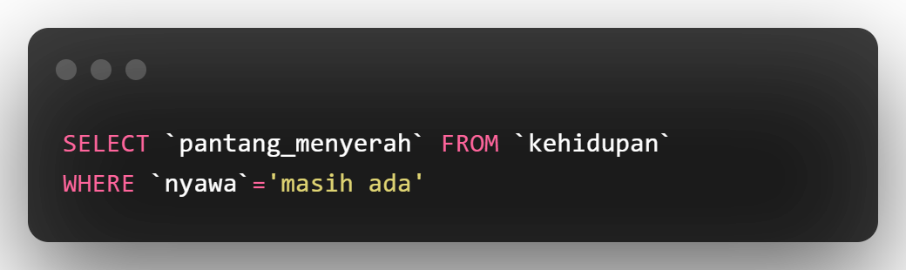
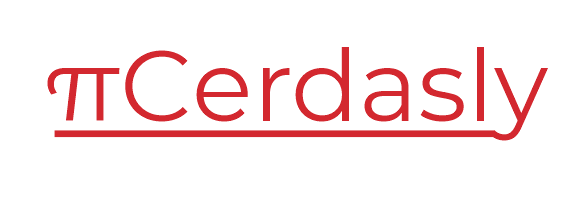

Siapa saya?

Keterampilan Saya
Saya adalah Fullstack Developer Pemula, terkadang menjadi Mobile Apps Developer dan Game Developer (tahap belajar), berikut ini adalah keterampilan utama saya (saya bukan ahli tapi saya akan berusaha)
Project Saya?
Saya memiliki banyak project namun kebanyakan adalah project freelance (tidak boleh akibat hak cipta) dan pembelajaran, sedangkan project berikut sudah jadi
Cerdasly: sebuah situs tanya jawab antar pelajar di Indonesia, dengan sistem "school ranking point" yang digunakan untuk menaikkan rank sekolah pengguna
XSSCon: alat pentest open source untuk menguji cross site scripting vulnurability (XSS), populer digunakan oleh pentester pemula
